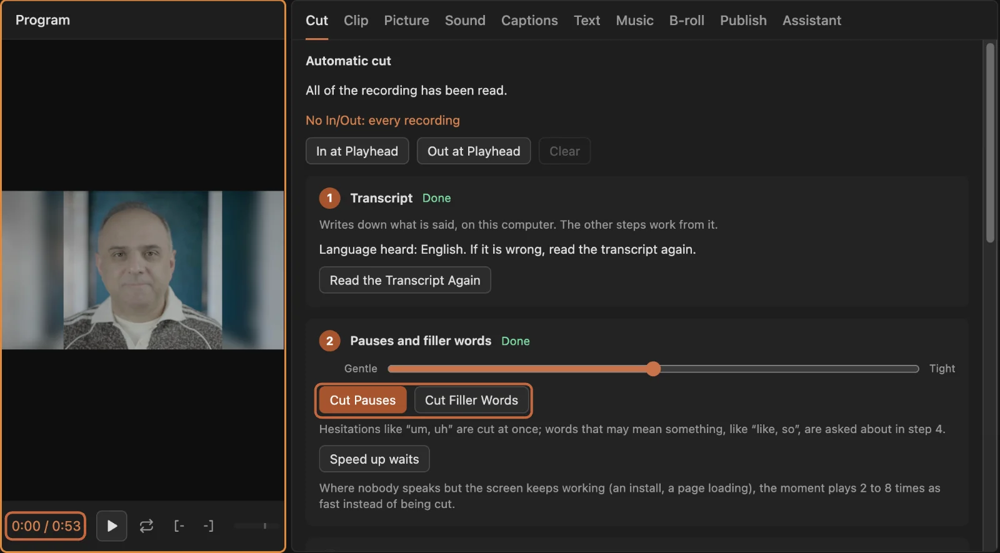
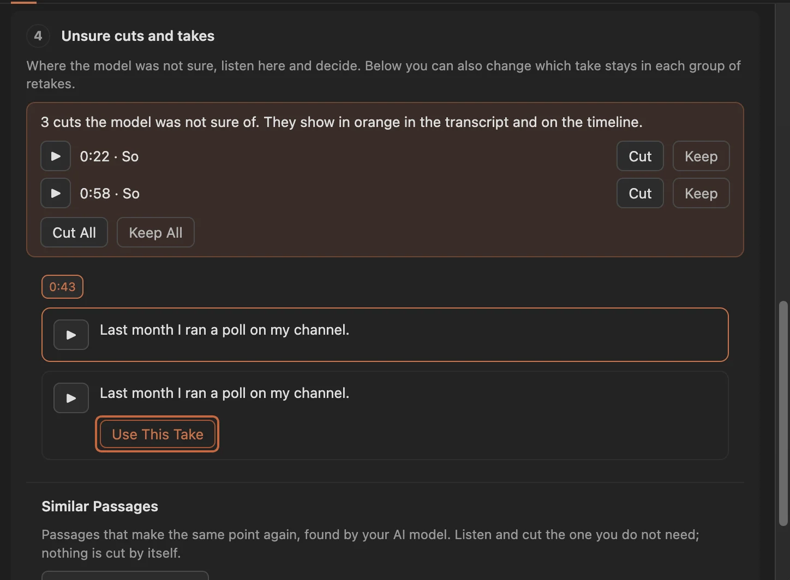

Cut
The Cut tab is the Automatic cut: four steps from a raw recording to a tight one. Every step can be undone, and your own cuts and the takes you chose stay.

In and Out
With no In and Out, each step works on every recording (No In/Out: every recording). Set them with In at Playhead and Out at Playhead, or the I and O keys, and the buttons work only between them: Transcribe In to Out, Cut Pauses from In to Out and so on. Clear removes them.
1 Transcript
Transcribe writes down what is said, on this computer: nothing is sent anywhere and nothing is paid. The other steps work from it. A progress line shows how far it has got and about how long is left; Stop ends it.
A long recording may take a while on a slower computer. If you want it faster, Settings › AI › Transcript can send the sound to a cloud service instead (Cloud transcription). Kilnframe asks before it does.
When it is done, Language heard names the language. If it is wrong, press Read the Transcript Again.
2 Pauses and filler words
- Cut Pauses cuts the silences. The slider sets how strictly, from Gentle to Tight; move it after cutting and the cut follows.
- Cut Filler Words cuts hesitations like “um, uh” at once. Words that may mean something, like “like, so”, are asked about in step 4.
- Speed up waits, for screen recordings: where nobody speaks but the screen keeps working (an install, a page loading), the moment plays 2 to 8 times as fast instead of being cut.
This step runs on your computer, without a model.
3 Retakes and what does not belong
Clean Retakes and Asides asks your AI model to find the sentences you said again, the starts you did not finish, and talk not meant for the viewer. It cuts what it is sure of and leaves the rest for step 4. This step needs a connected model (How Kilnframe uses AI).
4 Unsure cuts and takes
Where the model was not sure, the cut is listed here and shows in orange in the transcript and on the timeline. Press the play button to listen around it, then Cut or Keep. Cut All and Keep All decide them all.
Below, each group of retakes shows its takes. The one kept is framed; Use This Take keeps another.

Similar passages
Under the steps, Find Similar Passages asks your model for the places where you make the same point twice. Listen and cut the one you do not need; nothing is cut by itself.
What runs where
| Step | Runs |
|---|---|
| 1 Transcript | On this computer (or a cloud service, if you choose one) |
| 2 Pauses and filler words | On this computer |
| 3 Retakes and asides, Similar passages | Your AI model |
| 4 Unsure cuts and takes | You decide |